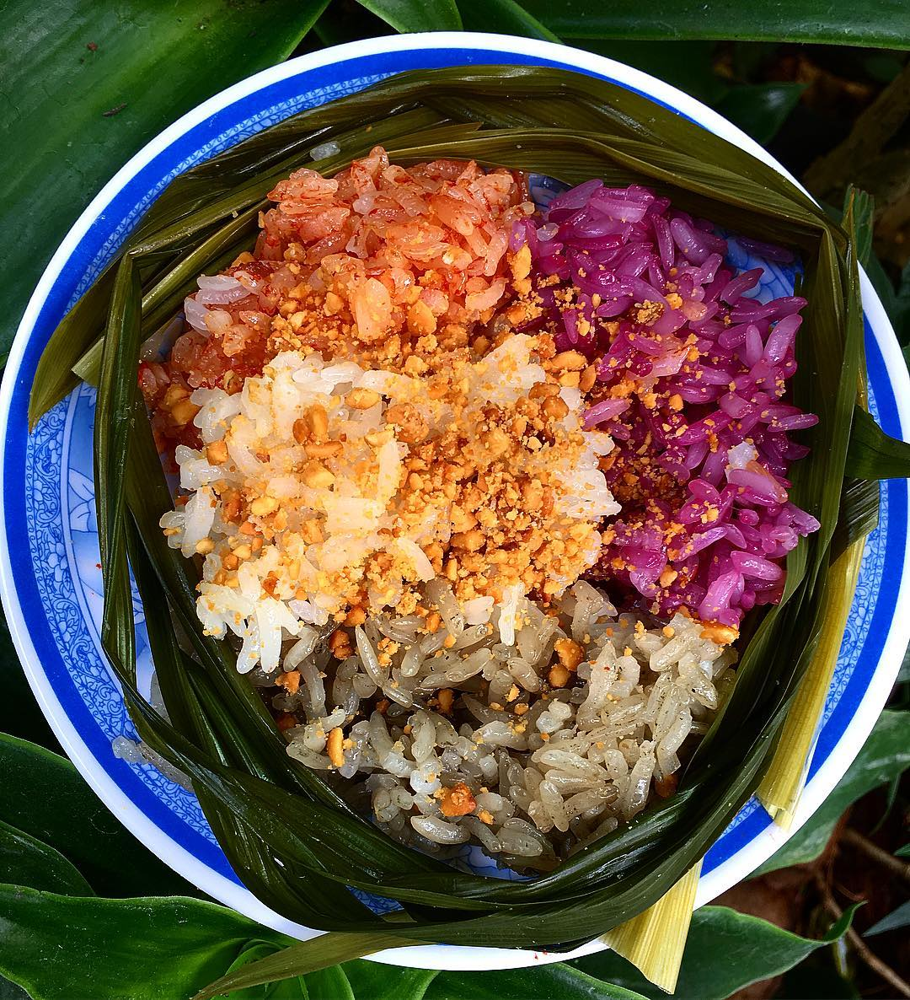

1. Thắng cố ngựa Bắc Hà
Đến Lào Cai, một trong những món ăn được thực khách tìm kiếm hàng đầu để có trải nghiệm ẩm thực hấp
dẫn trong chuyến đi Sapa - Lào Cai đó là Thắng Cố. Cái tên nghe vừa lạ vừa quen đối với người dân
Bắc Bộ và khiến nhiều người hứng thú khi đặt chân đến vùng đất Tây Bắc - Việt Nam. Thắng Cố xuất
hiện ở khá nhiều nơi ở vùng núi Bắc Bộ thế nhưng để thưởng thức hương vị truyền thống của món ăn này
có lẽ chỉ có ở Lào Cai mới thơm ngon và không lẫn lộn. Thắng cố ngựa Bắc Hà nổi tiếng và được tìm
kiếm hàng đầu trong những món ăn đặc sản Tây Bắc.
Thắng cố ngựa Bắc Hà được chế biến bởi nội tạng của ngựa. Gia vị để làm nên hương vị thơm ngon truyền
thống của thắng cố rất đa dạng gồm có: Quế, hồi, xả, địa liền, thảo quả, hạt dổi… Các nguyên liệu và
gia vị được ninh nhừ trong một chiếc chảo sâu truyền thống ở Lào Cai. Đây vốn dĩ không phải là món
ăn mà bất cứ ai thưởng thức cũng có thể cảm nhận được hương vị thơm ngon, đối với một số người thì
món ăn này còn khá khó ăn thế nhưng một khi đã quen với hương vị đặc sản Tây Bắc này thì chắc chắn
sẽ phát nghiện món ăn vừa thơm ngon, béo ngậy đặc sản Lào Cai này.
Để thưởng thức thắng cố ngựa Bắc Hà thì du khách đến Lào Cai thường lựa chọn đến chợ phiên Bắc Hà.
Đến đây bạn sẽ thấy hương thơm ngào ngạt của món ăn này lan tỏa ở nhiều ngóc ngách trong chợ vô cùng
hấp dẫn và lôi cuốn thực khách. Đến chợ phiên tìm hiểu về vẻ đẹp trong phong tục tập quán và văn hóa
của người dân địa phương vừa thưởng thức món ăn đặc sản thắng cố ngựa Bắc Hà là lựa chọn được nhiều
du khách đến Lào Cai yêu thích. Gọi một bát thắng cố ngựa nóng hổi nghi ngút khói kèm theo một chén
rượu ngô Bản Phố chắc chắn sẽ là hương vị khó có thể quên được trong chuyến đi du lịch Lào Cai.
2. Cá hồi thác Bạc
Cá hồi thác Bạc là món ăn đặc sản tiếp theo mà bạn không nên bỏ lỡ trong hành trình khám phá đặc sản
Sapa. Nếu bạn thắc mắc rằng cá hồi thường chỉ xuất hiện ở những vùng ôn đới sao lại là món ăn đặc
sản ở Sapa thì câu trả lời dành cho bạn đó là. Thời tiết khí hậu ở Sapa thường mát mẻ hơn rất nhiều
so với các tỉnh thành khác của Việt Nam do nằm ở độ cao 1600m so với mực nước biển. Dưới chân Thác
Bạc là địa điểm lý tưởng cho những chú cá hồi sinh sống và phát triển tại Việt Nam. Đây là món ăn có
giá trị dinh dưỡng cao được người dân Sapa chế biến thành rất nhiều món ăn ngon đặc sản hấp dẫn thực
khách trong chuyến du lịch Sapa của mình.
Đi du lịch Lào Cai đặc biệt là Sapa rất nhiều du khách đến đây không chỉ với mục đích ngắm nhìn thiên
nhiên tươi đẹp mà còn là để được khám phá ẩm thực đặc sắc của vùng đất này. Cá hồi là một trong
những sự lựa chọn hàng đầu của du khách khi muốn nếm thử hương vị của núi rừng Tây Bắc. Thịt cá hồi
mang màu vàng ngả nghệ đặc trưng, thịt cá săn không có mỡ và mang vị ngọt đậm đà. Cá hồi thác Bạc
được chế biến thành khá nhiều món ăn ngon cho thực khách đến Sapa thưởng thức như: lẩu cá hồi, gỏi
cá hồi, sashimi phong cách Nhật Bản, cá hồi nướng than, cá hồi hấp xì dầu… Lựa chọn cá hồi chế biến
theo phương thức nào tùy vào sở thích của bạn nhé!
3. Thịt lợn cắp nách
Lợn cắp nách nghe cái tên có vẻ khá lạ lẫm, nhiều người thắc mắc lợn cắp nách là giống lợn nào, thực
tế đây là giống lợn rừng được nuôi bằng cách thả rông mà đồng bào Thái, Mông, Dao ở Lào Cai yêu
thích. Gọi là lợn cắp nách là bởi giống lợn này nhỏ thường chỉ khoảng 5 đến 7 kg là người dân đem
bán, với cân nặng nhỏ bé nên đồng bào dân tộc có thể “cắp nách” dễ dàng nên cái tên lợn cắp nách
cũng từ đó mà ra.
Lợn cắp nách đặc sản Lào Cai có hương vị thơm hơn, ngọt hơn, chắc hơn so với thịt lợn chúng ta ăn
hằng ngày vì được nuôi thả rông. Đi du lịch Sapa Lào Cai rất nhiều du khách tìm kiếm món ăn đặc sản
này để có trải nghiệm ẩm thực thú vị trong chuyến đi Tây Bắc của mình. Thịt lợn cắp nách dễ ăn và
hợp khẩu vị của hầu hết thực khách đến Lào Cai. Lợn cắp nách được chế biến thành rất nhiều món ăn
ngon đặc sản như: lợn cắp nách quay, lợn cắp nách nướng, luộc hay lòng dồi lợn cắp nách cũng mang
hương vị rất riêng gây thương nhớ cho du khách về Lào Cai sau chuyến đi Tây Bắc của mình.
Đến Sapa du khách thường chọn một mẹt lợn cắp nách 7 món khác nhau để thưởng thức đầy đủ nhất các
cách chế biến của món ăn đặc sản này.
4. Cơm lam Lào Cai
Cơm Lam là món ăn không còn xa lạ đối với bất cứ ai đã từng đặt chân đến các vùng núi ở Việt Nam đặc
biệt là vùng núi phía Bắc. Đây là món ăn đặc sản dân giã nhưng chưa bao giờ làm thực khách thất vọng
hay thấy nhàm chán về món ăn này. Món ăn bình dị nhưng đậm chất tình Tây Bắc này được nấu bởi những
hạt gạo được thu hoạch trên những thửa ruộng bậc thang uốn lượn ở Lào Cai. Hương vị hạt gạo Lào Cai
cũng đậm chất núi rừng, dẻo thơm như cách đồng bào dân tộc bỏ rất nhiều công sức để có được những
hạt gạo thơm ngon này.
Gạo sau khi vo được cho vào ống nứa rồi nướng trên bếp than hồng, cơm lam Lào Cai có hương thơm ngào
ngạt, gạo dẻo và thơm đặc trưng của giống nếp hương hòa quyện cùng mùi thơm của nứa nướng than hồng.
Nướng cơm lam cũng cần bàn tay khéo léo, chăm chỉ đảo ống nứa sao cho đều để không bị cháy, không bị
sống. Điều đặc biệt là cơm lam để được lâu hơn so với cơm nấu ăn hằng ngày nên nhiều du khách chọn
đây là món quà mang hương vị Tây Bắc đặc trưng để đem về tặng cho người thân, bạn bè của mình đấy.
Cơm Lam ở Lào Cai không chỉ là món ăn đặc sản thơm ngon mà còn mang trong mình và một vùng văn hóa,
mang trong mình những điều chắt chiu tinh tế nhất của đất trời và đôi bàn tay cần cù khéo léo của
đồng bào dân tộc sinh sống ở nơi đây. Cơm lam Lào Cai Tây Bắc được ăn cùng với thịt nướng, cá nướng,
gà nướng hay chỉ chấm muối vừng cũng rất ngon.
5. Thịt trâu gác bếp
Nhắc đến đặc sản Tây Bắc, Lào Cai mà không nhắc đến món thịt trâu gác bếp thì quả là một thiếu sót
lớn. Thịt trâu gác bếp Tây Bắc nổi tiếng được khách du lịch đến Sapa yêu thích. Món thịt gác bếp này
tương đối giống với thịt xông khói nhưng khác ở chỗ là người dân địa phương để rất lâu trên gác bếp
để thịt trâu đủ độ khô và thấm gia vị đặc trưng. Đây là món ăn bắt nguồn từ đồng bào Thái Đen ở Lào
Cai, người Thái Đen làm thịt trâu gác bếp để tiếp đãi khách vào những dịp đặc biệt hay lễ tết.
Ngày nay thịt trâu gác bếp là món ăn được khách du lịch đến Lào Cai tìm kiếm để thưởng thức và mua về
làm quà rất nhiều. Thịt trâu gác bếp đắt bởi để được thưởng thức hương vị truyền thống, đặc trưng
của Tây Bắc này thì phải chờ đến rất nhiều tháng mới có thể đem ra thưởng thức được. Thịt trâu bên
ngoài có màu nâu sẫm, khi xé từng thớ thịt ra thì bên trong là một màu hồng bắt mắt, nhìn rất hấp
dẫn.
Nếu là tín đồ của món ăn đặc sản Tây Bắc này chắc có lẽ bạn đã biết được thịt trâu gác bếp phải ăn
thế nào mới ngon rồi phải không. Thịt trâu gác bếp đặc sản Lào Cai, Tây Bắc thường được xé nhỏ rồi
chấm cùng nước chằm chéo, nhiều du khách lại thích chấm với muối ớt chanh, hoặc tương ớt nhưng dù
chấm với loại gia vị nào thì cũng rất thơm ngon. Thịt trâu gác bếp còn có thể thưởng thức theo nhiều
cách khác như luộc qua cho thịt mềm rồi thái nhỏ. Thịt trâu gác bếp có vị mặn hơi hắc và cay nên đối
với nhiều người vị lạ này cần một thời gian để làm quen nhưng khi đã quen rồi thì đây là món ăn nhậu
gây nghiện, càng ăn càng thích.
Giá của thịt trâu gác bếp ở Lào Cai lên đến 800.000 đến 1.000.000đ/kg. Món ăn có giá đắt đỏ nhưng lại
rất được yêu thích và ai đến Lào Cai cũng muốn thưởng thức hoặc mua về để ăn dần hay đem biếu tặng
người thân bạn bè sau chuyến đi Lào Cai của mình.
6. Xôi ngũ sắc
Khu vực Mường Lò - Yên Bái được mệnh danh là “lòng chảo” của các tỉnh Tây Bắc. Đến đây bạn
không chỉ được ngắm nhìn thiên nhiên Tây Bắc đẹp mộng mơ mà còn được thưởng thức món ăn đặc sản của
núi rừng Bắc Bộ mà đặc trưng nhất, nổi tiếng nhất đó là xôi ngũ sắc ở Mường Lò. Món ăn bắt mắt mang
hương vị thơm ngon, ngọt ngào, tinh túy, sự kết hợp của thiên nhiên và bàn tay chăm chỉ của con
người.
Nguyên liệu để làm nên món ăn ngon đặc sản này của Tây Bắc khá đặc biệt. Chọn nguyên liệu làm xôi ngũ
sắc là công đoạn quan trọng quyết định khá nhiều đến hương vị và chất lượng món ăn nên phải chọn
thật kỹ. Phải lựa chọn được loại gạo ngon thì xôi mới dẻo, thơm (gạo Tú Lệ; hạt to). Để tạo màu
cho xôi thêm phần bắt mắt và có nhiều hương vị khác nhau người Yên Bái dùng các loại lá rừng để
nhuộm màu gạo như: lá cẩm, củ nghệ, gấc chín…

Muốn mẻ xôi ngũ sắc thơm ngon, mang hương vị ngọt ngào hơn thì nước dùng để nấu xôi phải là nước suối
tinh khiết. Phải khéo léo để lần lượt từng màu gạo lên nhau để màu xôi không bị lẫn lộn. Khi đồ xôi
cũng phải canh lửa để cháy đều, phết một lớp mỡ gà lên bề mặt xôi để màu xôi bóng ngậy hơn.
Không chỉ là món ăn ngon đặc sản mà đối với người dân Mường Lò thì xôi ngũ sắc còn là món ăn gắn liền
với rất nhiều ý nghĩa đặc biệt. Món ăn này tượng trưng cho thuyết âm dương ngũ hành (kim, mộc, thủy,
hỏa, thổ). Nếu xôi màu đỏ, mang ý nghĩa tượng trưng cho khát vọng cuộc sống, xôi màu tím, tượng
trưng cho đất đai trù phú, quý giá, xôi màu vàng tượng trưng cho sự ấm no, phồn thịnh. Còn xôi màu
xanh, tượng trưng cho cảnh sắc tuyệt đẹp của núi rừng đại ngàn Tây Bắc. Xôi ngũ sắc Yên Bái thường
được làm vào các dịp lễ hội lớn như: Lễ hội Lồng Tồng (cầu mùa), Tết Nguyên Đán, Tết Xíp Xí
(14/7) … hay được làm tại các quán ăn để phục vụ khách du lịch thưởng thức đặc sản Tây Bắc
7. Thịt gà đen Tủa Chùa
Thịt gà đen Tủa Chùa là món ăn độc đáo đặc sản của Điện Biên được rất nhiều du khách biết đến. Món ăn
này được đồng bào dân tộc H'mông ở Điện Biên truyền từ đời này qua đời khác. Giống gà để làm nên món
ăn đặc sản này rất đặc biệt, đây là giống gà xương đen đặc hữu của đồng bào H’mông còn có tên gọi là
Ka Đu.
Người H’mông ở Điện Biên coi giống gà này là một tài sản quý của dân tộc mình, Ka Đu luôn có trong
danh mục tài sản thừa kế, biếu tặng hay dựng vợ gả chồng của người dân H’mông. Giống gà này có da
đen, mắt viền đen, vân thịt đen và phủ tạng, xương gà cũng đều là một màu đen rất đặc biệt. Thịt gà
Ka Đu rất săn chắc vì được người H’mông nuôi thả. Trong thịt gà Ka Đu có hàm lượng glutamic và sắt
cao gấp 2 lần so với gà bình thường và hàm lượng colesterol thấp nên rất tốt cho sức khỏe.
Gà đen Ka Đu được người H’mông nấu cháo cho trẻ nhỏ, phụ nữ mang thai, cho con bú. Xương gà được dùng
để ngâm rượu hoặc nấu cao sử dụng cho người già, ốm yếu, chân tay run có tác dụng rất tốt. Đến với
du lịch Điện Biên Phủ được thưởng thức gà đen Tủa Chùa chắc chắn là trải nghiệm ẩm thực đáng nhớ
trong chuyến đi của bạn đấy nhé, vừa ngon lại rất tốt cho sức khỏe.
8. Nậm Pịa
Nậm Pịa là một trong những món ăn đặc sản Tây Bắc nổi tiếng hàng đầu mà không phải ai cũng dám thử.
Đây là món ăn truyền thống của đồng bào dân tộc Thái tại Sơn La, được chế biến vào những dịp lễ tết,
cưới hỏi, những bữa tiệc chiêu đãi khách đến nhà. Vì sao ít người dám thử món ăn này là bởi nguyên
liệu làm Nậm Pịa rất đặc biệt. Tiết đông, bạc nhạc, sụn, đuôi, thịt, và lục phủ ngũ tạng của động
vật ăn cỏ như lòng, gan, phổi, phèo thường là của bò, dê. Không chỉ có vậy nguyên liệu khiến món ăn
này trở nên “kinh khủng” với nhiều người đó là “pịa”.
“Pịa” thực chất là phân non, là chất sền sệt trong ruột non của các loài động vật ăn cỏ như bò, dê.
Phong tục của người Thái mỗi khi mổ trâu, bò, dê thường là món nướng và Nậm Pịa là món đồ chấm thịt
nướng để món ăn đặc biệt hơn mang hương vị đặc sản, truyền thống của người dân tộc Thái.
Nậm pịa không phải là một món dễ ăn. Nó có vị đắng của lòng và pịa cũng đắng, tuy nhiên sau khi ăn sẽ
để lại vị ngọt trong cuống họng, nậm pịa cũng có vị cay cay của hạt mắc khén. Nậm pịa có tác dụng
giải rượu rất tốt. Nếu là người dễ ăn thì bạn nên thử món ăn độc đáo này của người dân tộc Thái khi
đến Sơn La du lịch nhé!